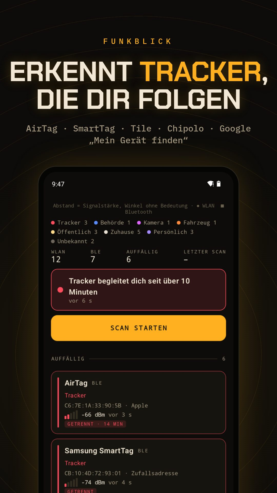

WLAN · BLUETOOTH · ANDROID
Kamera in der Ferienwohnung?
Funkblick ist eine Kamera-Detektor-App für Android. Vorab: Keine versteckte-Kamera-App findet alles, auch keine Kamera-finden-App aus dem Play Store. Viele billige Mini-Kameras machen ein eigenes WLAN auf, damit man sie einrichten kann, und viele Überwachungskameras kommen von einer Handvoll Hersteller. Funkblick prüft beides: Kamera-Hersteller aus dem IEEE-Register und typische Kamera-WLAN-Namen, und meldet sich, sobald eine auftaucht.
APK herunterladenQuellcode auf GitHub
Kostenlos, Android 8.0 oder neuer, läuft auf GrapheneOS ohne Google-Dienste. Kein Konto. Updates holt die App selbst von GitHub.

Zimmer in fünf Minuten prüfen
- In der Wohnung den Scan starten und zwei Minuten laufen lassen.
- Liste → Filter Kamera. Rosa Einträge sind Kamera-Hersteller (Hikvision, Dahua, EZVIZ, Ring, Arlo …) oder WLAN-Namen, die Kameras beim Einrichten nutzen (V380, IPC, LookCam …).
- Durch die Zimmer gehen: das stärkste Signal ist meist das nächste Gerät.
- Zusätzlich hinschauen: Rauchmelder, Ladegeräte und Uhren, die aufs Bett oder in die Dusche zeigen.
Was Funkblick nicht kann
- Keine Richtung. Ein Handy misst nur, wie stark ein Signal ist. Der Winkel im Radar ist ein fester Platz pro Gerät, kein Kompass.
- Nur Zugangspunkte. Android zeigt WLAN-Router und Hotspots, keine Geräte, die nur verbunden sind. Eine Kamera im fremden Heimnetz sieht Funkblick nicht.
- Kein Behördenfunk. Polizei und Rettungsdienst funken per TETRA um 400 MHz. Das empfängt kein Handy. Funkblick sieht nur WLAN und Bluetooth ihrer Geräte, wenn sie welche haben.
- Zufallsadressen. Handys und Tracker wechseln ihre Bluetooth-Adresse. Funkblick liest dann, was das Gerät sendet, statt den Hersteller zu raten.
Häufige Fragen
Findet das Handy jede versteckte Kamera?
Nein. Es findet Kameras, die ein eigenes WLAN aufmachen oder per Bluetooth senden. Eine Kamera, die nur im WLAN des Vermieters hängt, sieht keine App, weil Android nur Zugangspunkte auflistet.
Was ist mit dem Infrarot-Trick?
Mit der Handykamera nach leuchtenden IR-LEDs suchen klappt nur bei Kameras mit Nachtsicht. Mach es zusätzlich; Funkblick deckt die Funk-Seite ab.
Darf der Vermieter in der Ferienwohnung filmen?
In Schlaf- und Badezimmern nie. Heimliche Aufnahmen im höchstpersönlichen Lebensbereich sind nach § 201a StGB strafbar. Fotografiere den Fund und ruf die Polizei.